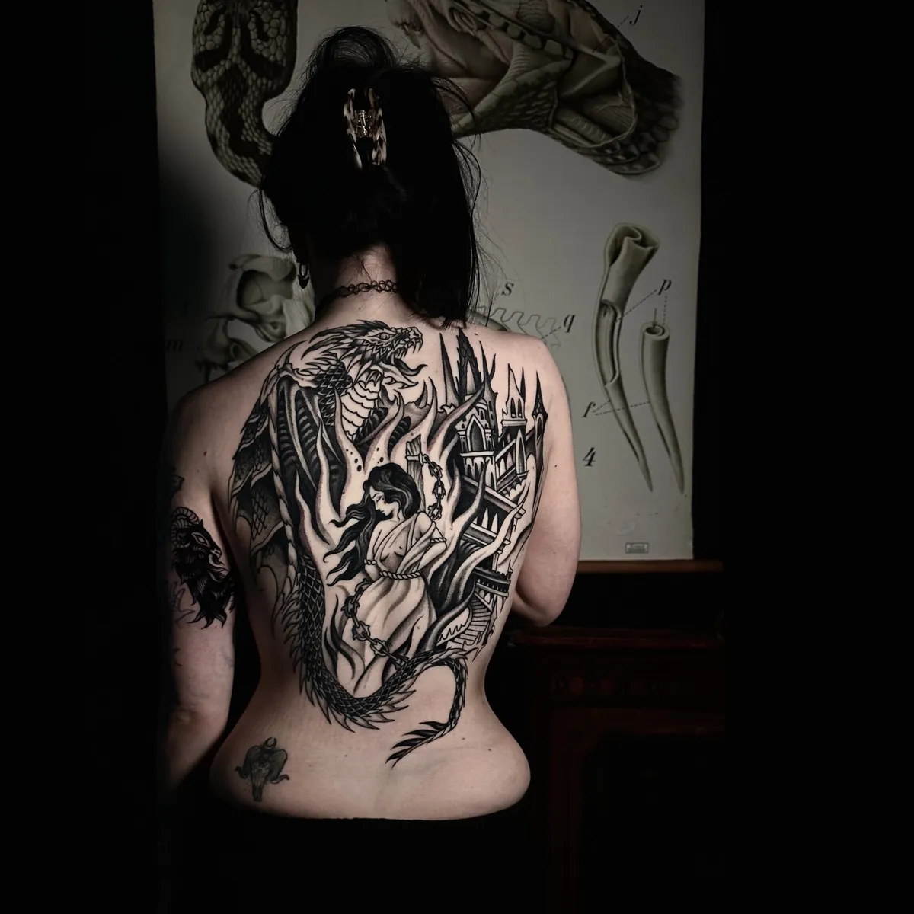
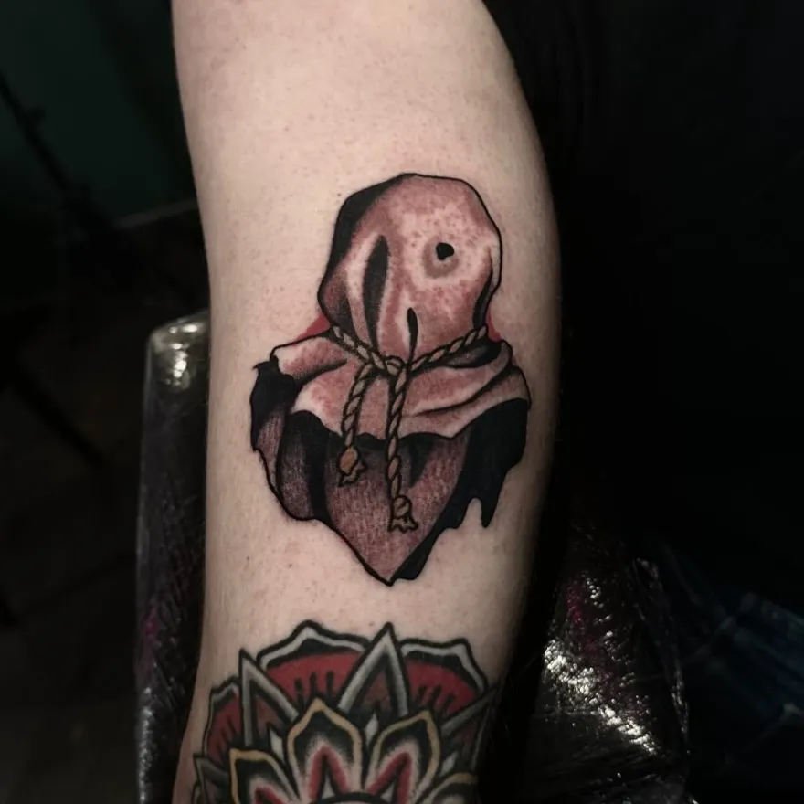
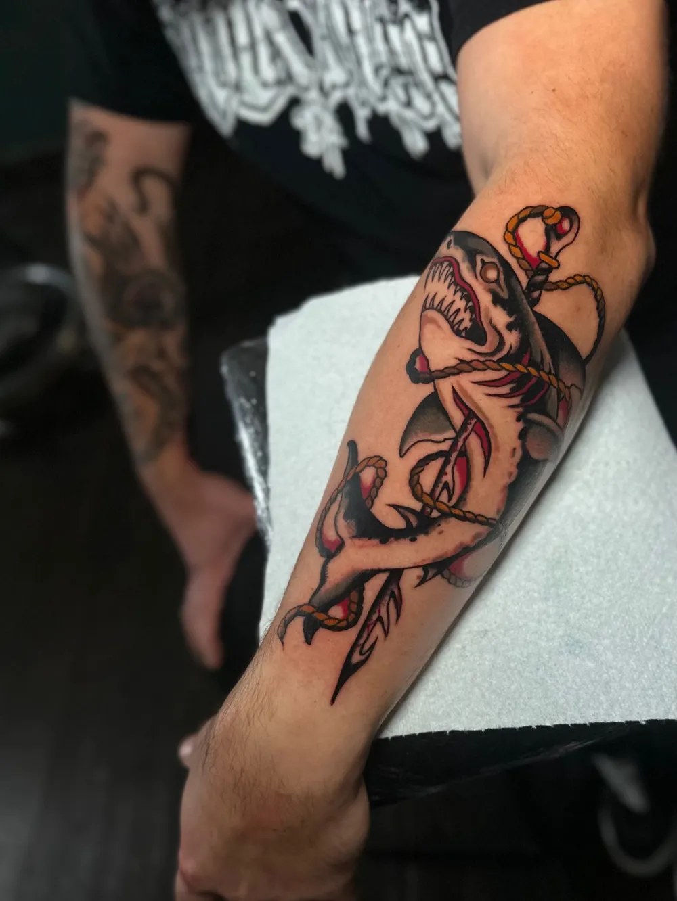
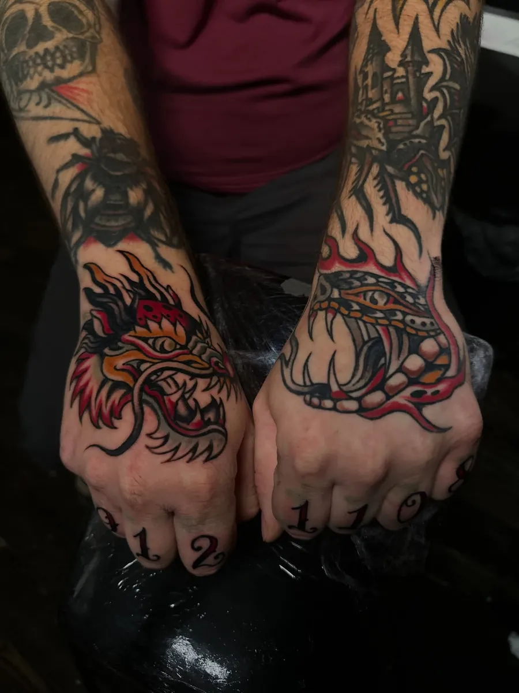
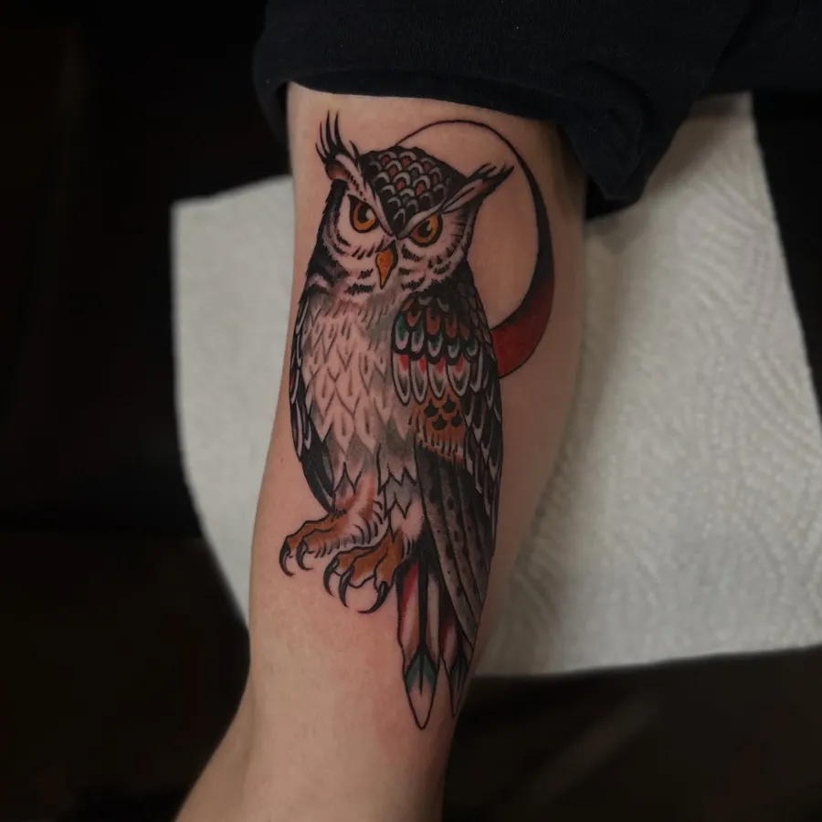
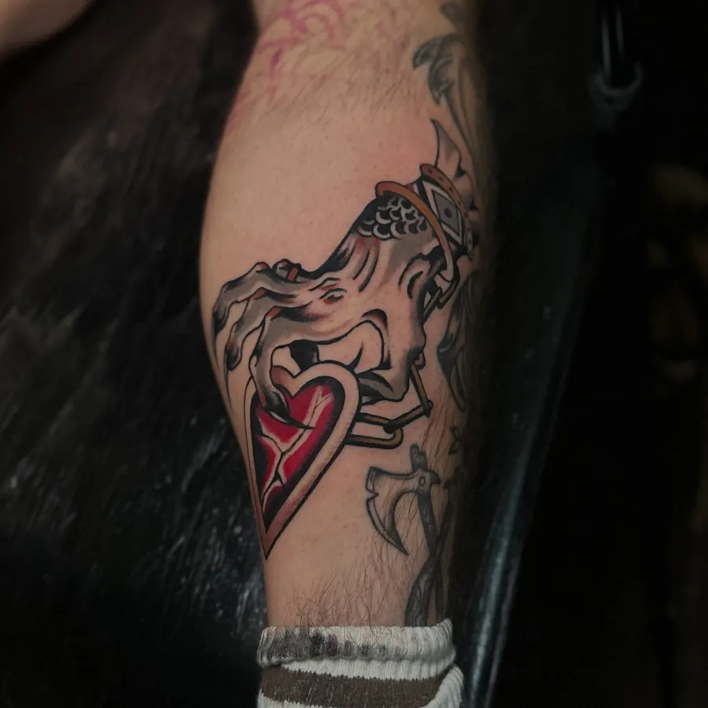
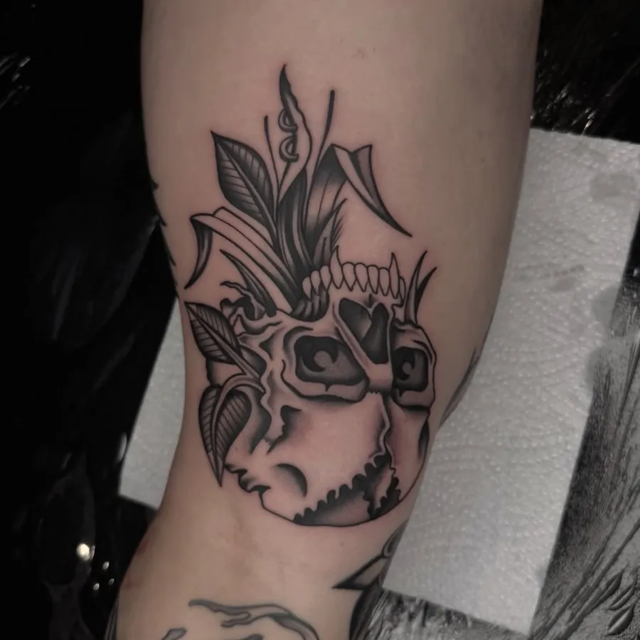
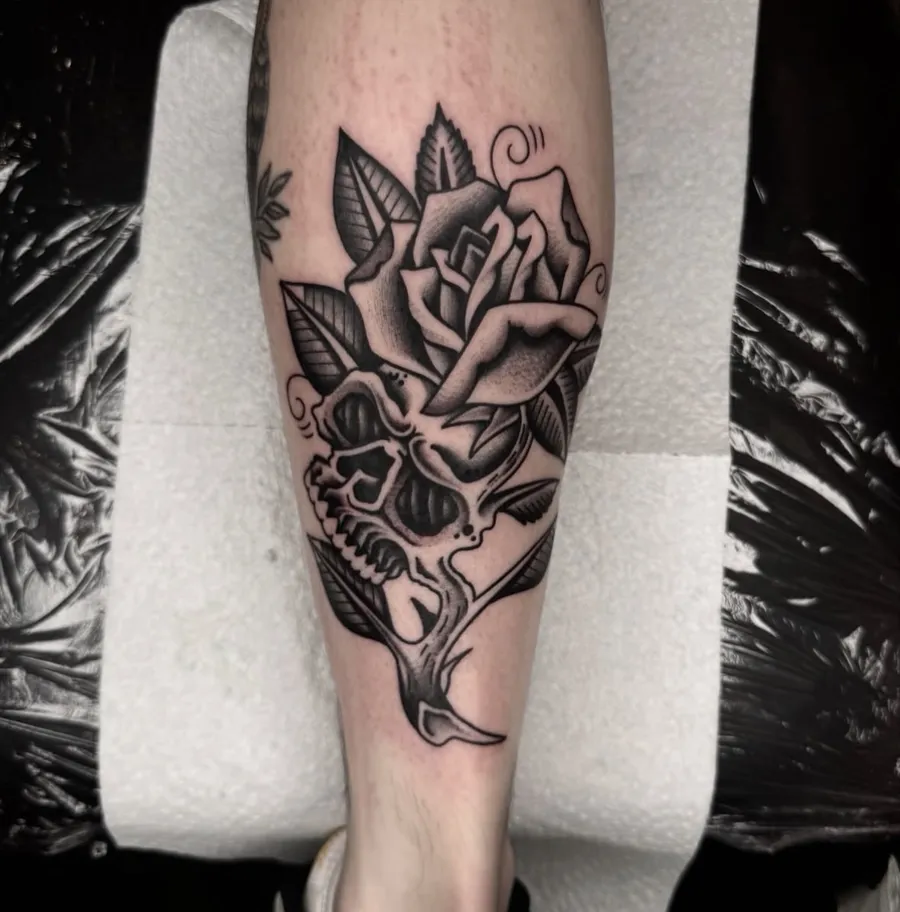
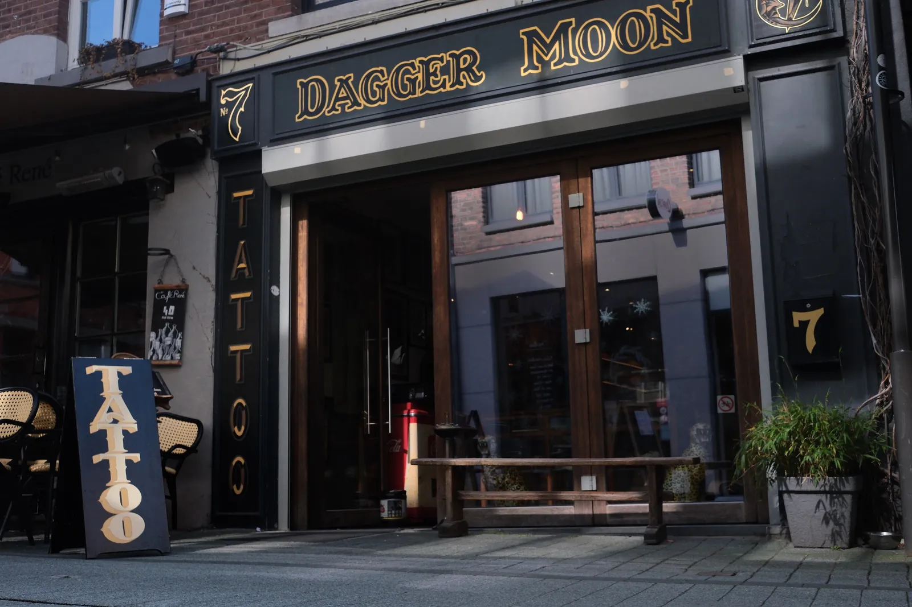

Custom work, real tattoos.
Traditional, framed traditional en bold blackwork. Wandel binnen voor een babbel, een koffie of een kleine walk-in. Voor iets groters tekenen we samen tot het helemaal klopt.
Binnenwandelen, kiezen of samen tekenen.
Iedereen komt bij ons op zijn eigen manier binnen. Een klein ding op dezelfde dag, een flash van de muur of een groot stuk over meerdere sessies: het begint altijd met een gesprek aan de toog.
Zonder afspraak
Wil je een kleine tattoo en hem dezelfde dag laten zetten? Kom gerust binnen en vraag of we tijd hebben. Lukt het niet meteen, dan plannen we je zo snel mogelijk in.

Van de muur
De muren hangen vol ingekaderde flash. Zie je iets dat je meteen wil, wijs het aan. Elk jaar rond Halloween houden we ook een flash day: we starten om 13u, first come, first serve.

Op maat getekend
Vertel wat je in gedachten hebt en we tekenen het uit in onze stijl. Tussendoor vragen we telkens of het ontwerp goed zit of nog bijgestuurd moet worden. Je afspraak leg je vast met een voorschot via Payconiq.

Draken, schedels, slangen en veel karakter.
Bert brengt een donkere kant in traditional: bold blackwork met middeleeuwse en gotische beelden. Gilles zet er zijn eigen schedels, rozen en vogels naast. Alles hieronder is bij ons in de shop gezet.







"This style is called framed traditional because, as you can guess, it's framed. And traditional."Bert, op Instagram

Muziek op, koffie klaar, en tijd voor een babbel.
Bert runt Dagger Moon op het Hemelrijk. Gilles is de tweede vaste artiest, en geregeld schuift er een gastartiest aan. Niemand kijkt raar op als je gewoon even komt kijken.
Bert eigenaar
@bertdaggermoonTraditional, framed traditional en bold blackwork. Draken, slangen, uilen en alles met een donker randje.
Gilles vaste artiest
@concept.inkSchedels, rozen, vogels en grotere rugstukken, zoals de feniks hierboven.
 Op weg naar Zuid-Afrika. In 2027 staat Bert op de South Africa International Tattoo Convention.
Op weg naar Zuid-Afrika. In 2027 staat Bert op de South Africa International Tattoo Convention.
"Al jarenlang vaste klant, en altijd enorm tevreden van ieder resultaat. Helemaal op maat en in eigen stijl, Bert is dé tattoo expert in Hasselt."
Sam Vanwelkenhuyzen op Google"Keer op keer wandel ik er tevreden buiten, hij maakt de vetste dingen. Hij vraagt ook steeds of het ontwerp ok is of als er nog iets aangepast moet worden."Daryl Phoebe op Google
"Top kerels! Leuke tattoo shop met goede muziek en lekkere koffie."Jeff Beyens op Google

Hemelrijk 7, de zwarte gevel met goud.
Midden in het centrum van Hasselt. Binnenlopen mag, een berichtje vooraf ook.
Open
- Maandag tot zaterdag12u tot 18u
- Zondaggesloten
Adres
Hemelrijk 7
3500 Hasselt